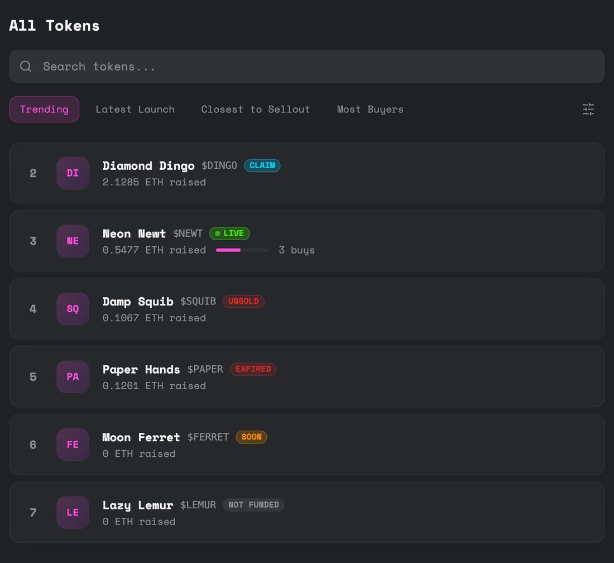
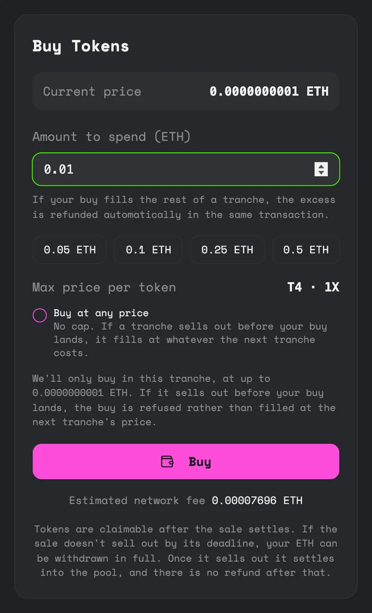

Buy in an auction
Buying in a punk.fun sale works differently from a normal fixed-price sale. The price moves as batches sell, and you collect your tokens after the sale sells out rather than straight away. Here's what you need to know.
Finding a sale
The Explore page lists every launch with a badge showing where it's at. LIVE means you can buy now. The rest are explained on Sale states.

How the price works
The sale is split into batches. The app calls them tranches, so you'll see T1, T2 and so on. A batch opens at a set price. If the launcher set a price decay, the price drifts down block by block towards a floor. When a batch sells out, the next one opens, usually bigger and at a higher price.
So the price drifts down, then steps up at each new batch. Pricing covers this in detail.
Commit now, claim later
- You commit ETHYou send ETH and lock in your share of tokens at the current price.
- You don't get tokens yetThey're recorded as owed to you, but they stay in the sale until it finishes.
- You claim once it sells outWhen the last token is bought, claims open and you collect everything you're owed in one go.
This applies to everyone, the launcher included. The launcher holds no tokens while the sale runs.
Placing a buy

You enter an amount of ETH. The sale works out how many tokens that buys at the current price and records them against your wallet. Two things are worth knowing.
Your buy is capped at this batch's price
By default your buy only goes through in the batch that's open now, at up to its current price. If that batch sells out before your transaction lands, your buy is refused rather than filled at the next batch's higher price. Nothing is spent except gas.
If you'd rather it went through whatever the price, tick Buy at any price. Then if the batch sells out first, your buy fills at whatever the next batch costs.
Buying across a batch boundary
If your buy is bigger than what's left in the current batch, you get what remains and the leftover ETH comes straight back to you in the same transaction. You're never pulled into the next batch by accident.
If your buy takes the last token, it also creates the trading pool, so the network fee is higher than an ordinary buy. The panel warns you when this applies.
Claiming your tokens
Once the sale has sold out, the panel changes to Claim Your Tokens. One transaction sends everything you're owed to your wallet. There's no deadline and no rush. Claiming and after the sale has more.
In a batch-average sale, the number of tokens you see when you buy is an estimate until your batch closes. Batch-average pricing explains why.
If the sale doesn't sell out
Every sale has a deadline. If it passes without the sale selling out, buying stops and you can withdraw exactly the ETH you paid, with no time limit. When a sale doesn't sell out has the detail.
What can go wrong
| Situation | What happens |
|---|---|
| The batch sells out before your buy lands | Your buy is refused. Only gas is spent. Try again at the new price, or tick Buy at any price. |
| Your buy is bigger than what's left in the batch | You get what's left and the extra ETH comes back in the same transaction. |
| The sale doesn't sell out by its deadline | Buying stops and you withdraw exactly what you paid. |
| The final buy can't create the pool | That buy is rejected and the sale stays open. Nothing is left half-finished. |
Before you buy
- You're committing ETH now and claiming tokens later.
- Later batches cost more than earlier ones.
- Trading opens at the average price paid across the whole sale, so a late batch can start below what it paid. See The pool at sellout.
- A sale either sells out and trades, or misses its deadline and refunds. Once it sells out, there are no refunds.